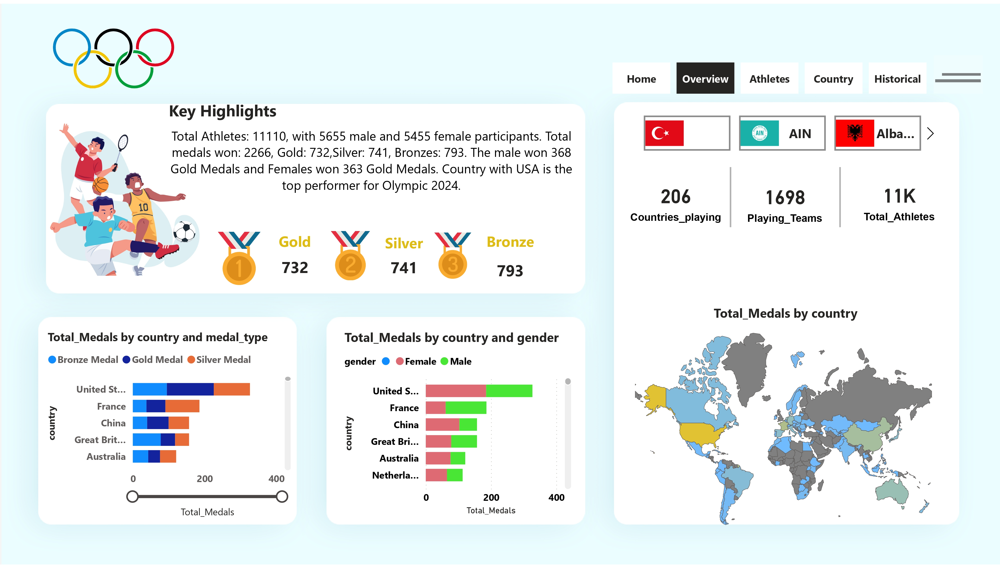
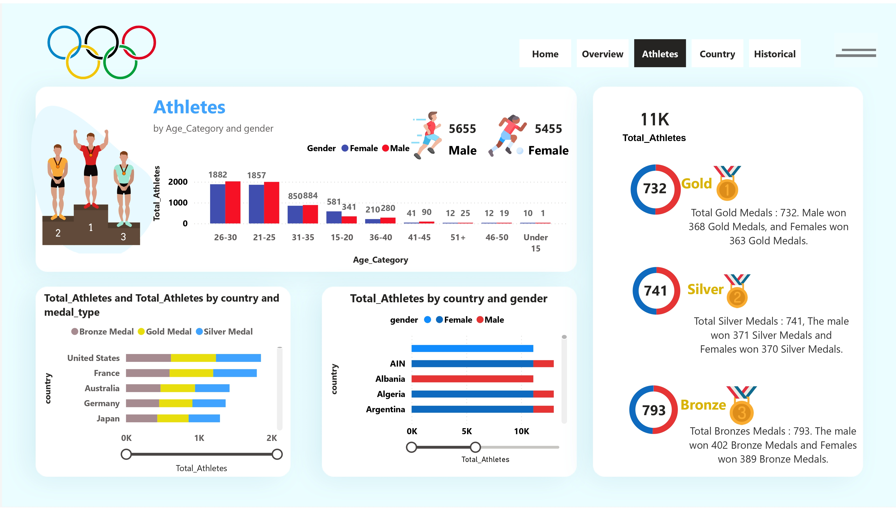
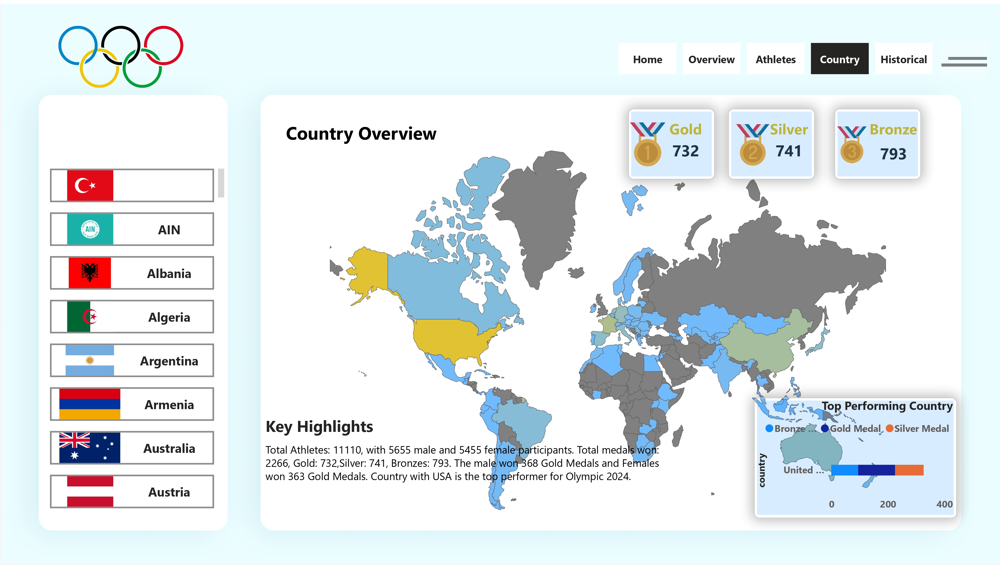
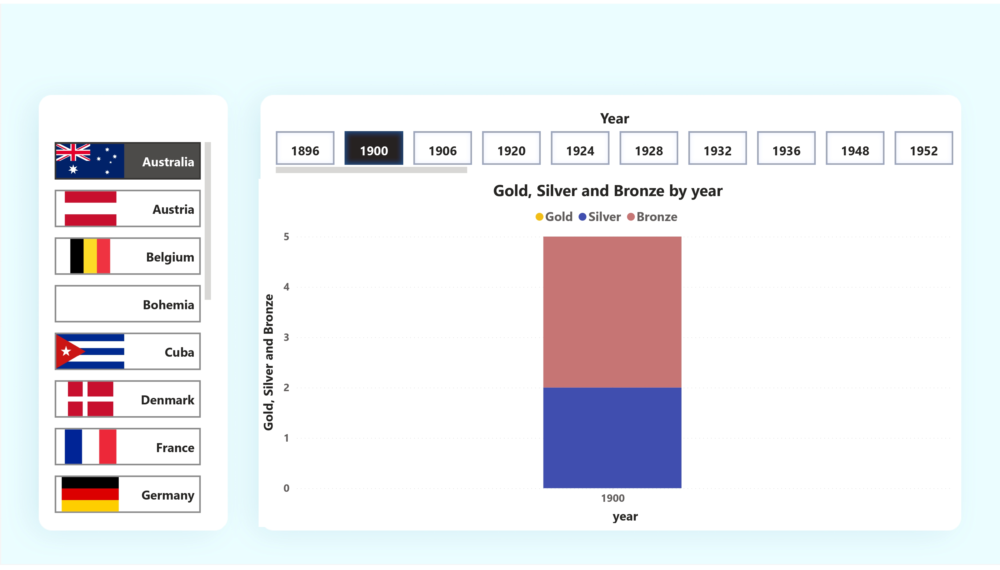
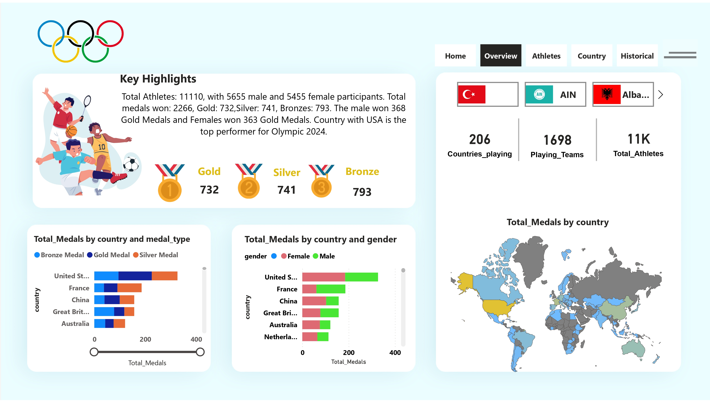
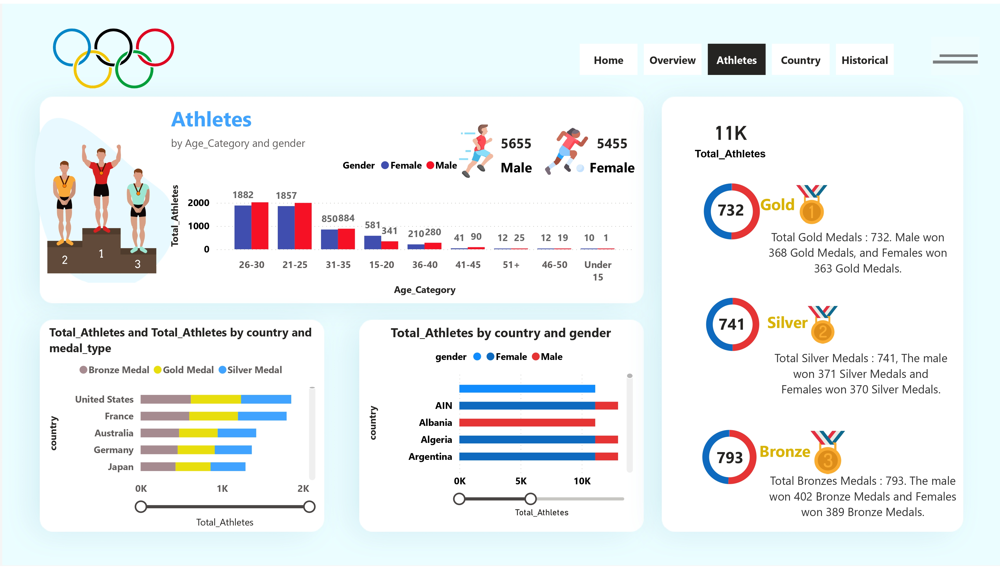
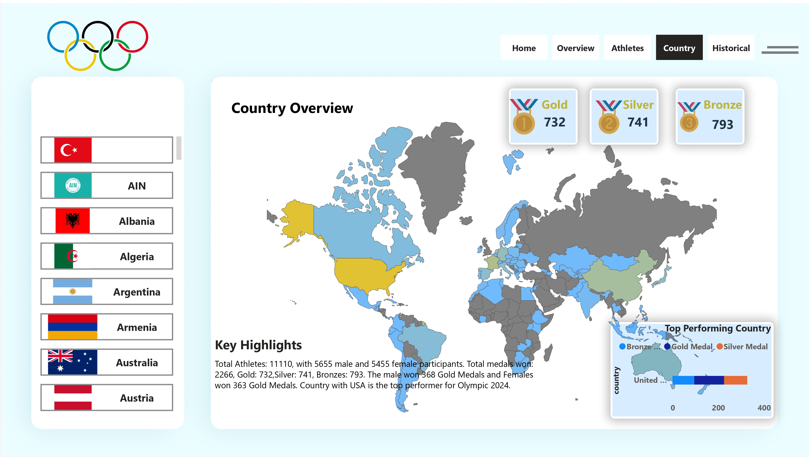
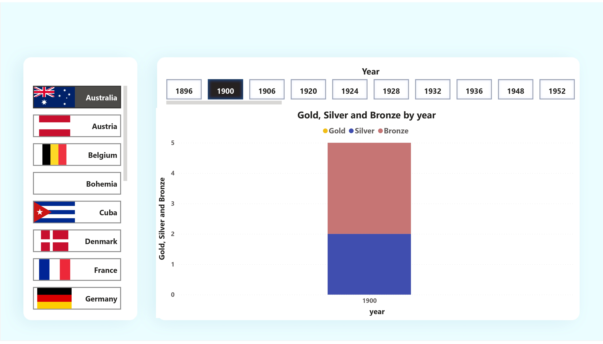
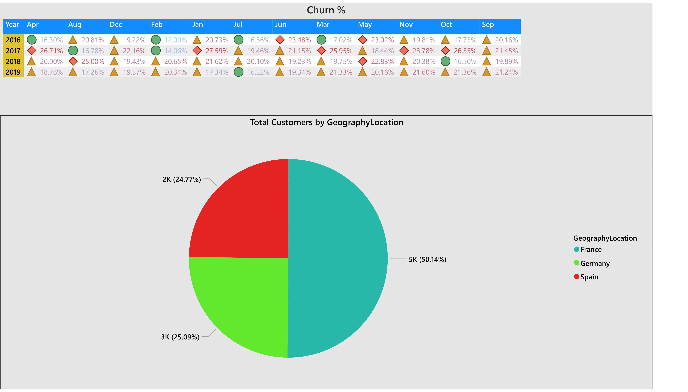
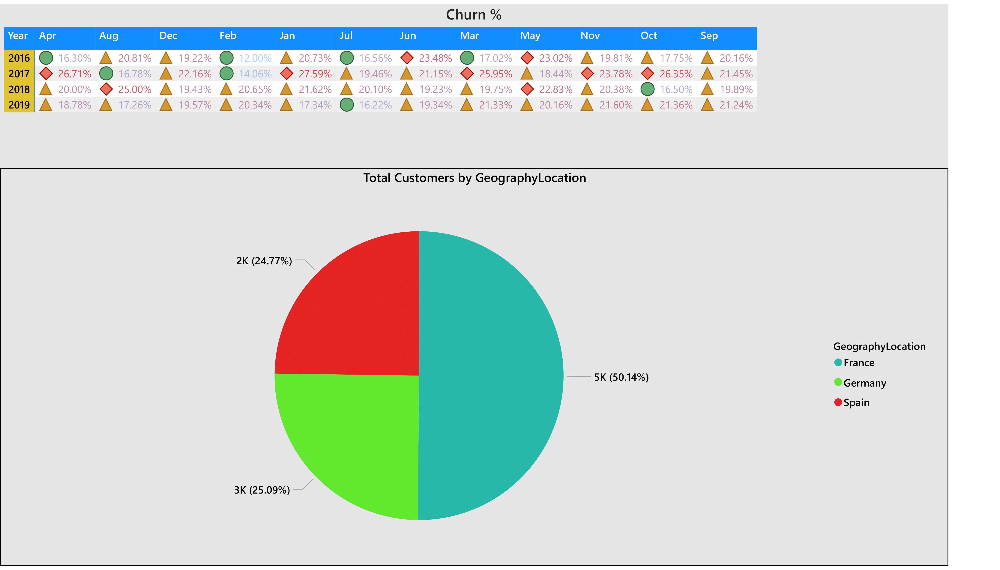

Projects
Paris Olympic 2024 Dashboard
Created interactive Power BI reports highlighting athlete participation, country performance, and medal distribution using DAX and advanced visualization. The Paris Olympic 2024 Dashboard provides a comprehensive analysis of the upcoming Olympic Games. It offers insights into athlete participation, country performance, and medal distribution by type and gender. This interactive dashboard enables users to explore detailed data and uncover trends that highlight top-performing countries and athlete demographics.
 







Diwali Sales Analysis
Analyzed consumer behavior and sales trends using NumPy, Pandas, Matplotlib, and Seaborn to optimize strategies and improve inventory management.
GitHub RepoBinkit - India's Last Minute App Dashboard
Created an interactive dashboard for Binkit, an India-based last-minute app. It visualizes key performance metrics, showing sales patterns, popular items, and outlet performance across various parameters.

RBC Customer Churn Analysis Dashboard
Analyzed customer churn data for Royal Bank of Canada (RBC). This dashboard highlights customer attrition trends, identifies high-churn segments, and suggests strategies for improving customer retention using Power BI.
 
